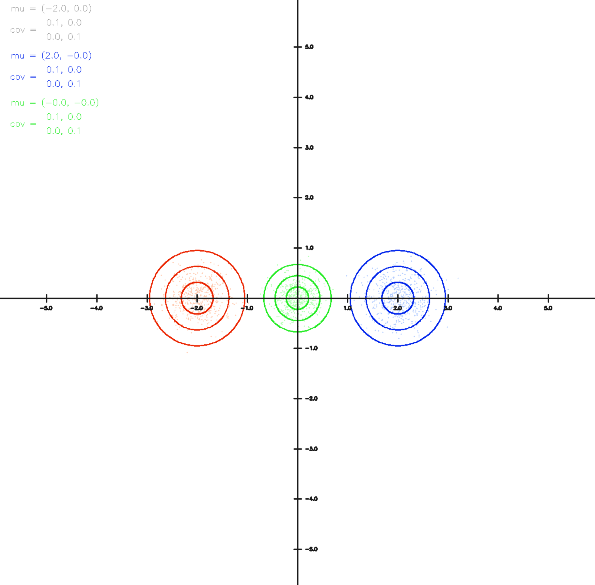
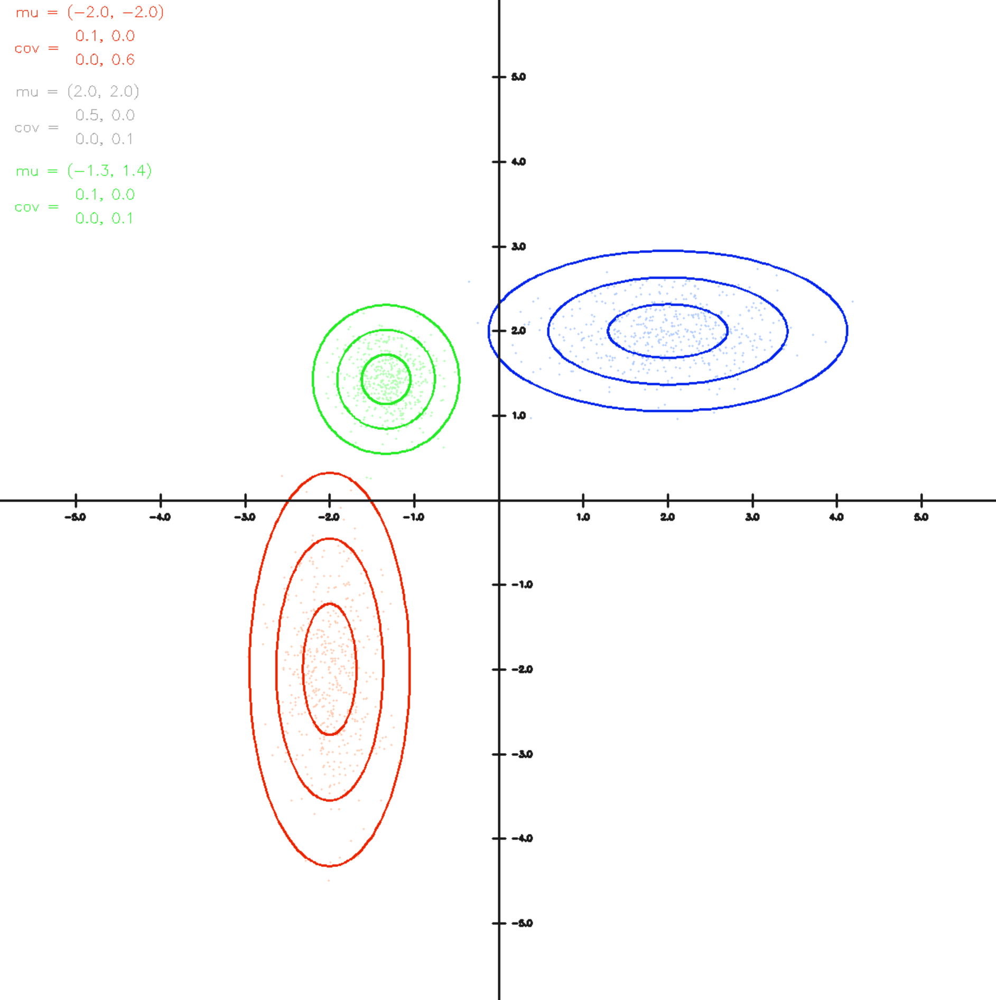

Minimum Variance Fusion
Einleitung
Das Konzept der Minimum Variance Fusion (MVF) ist ein fundamentales Verfahren in der Sensorfusion und statistischen Schätzung, das darauf abzielt, mehrere unabhängige Schätzungen einer Größe so zu kombinieren, dass die resultierende Gesamtschätzung die geringstmögliche Varianz aufweist. Dieses Verfahren wird besonders häufig in Anwendungen wie Robotik, Navigation, Signalverarbeitung und maschinellem Lernen verwendet, wo Daten aus verschiedenen Quellen (z. B. mehreren Sensoren) integriert werden müssen, um eine möglichst genaue Gesamtaussage zu erhalten.
Motivation
In der Praxis liefern verschiedene Sensoren oft leicht unterschiedliche Werte für dieselbe physikalische Größe – sei es aufgrund von Rauschen, Kalibrierungsfehlern oder unterschiedlichen Blickwinkeln. Anstatt eine dieser Messungen willkürlich auszuwählen oder zu mitteln, erlaubt die Minimum Variance Fusion eine gewichtete Kombination, bei der Informationen aus allen Quellen berücksichtigt werden. Die Gewichtung erfolgt dabei so, dass Messungen mit geringerer Unsicherheit (d. h. kleinerer Varianz) stärker gewichtet werden als solche mit höherer Unsicherheit.
Mathematischer Hintergrund
Die Grundidee lässt sich mit Hilfe der linearen Schätzung beschreiben. Angenommen, zwei unabhängige Schätzwerte \(x_1\) und \(x_2\) mit den zugehörigen Varianzen \(\sigma_1^2\) und \(\sigma_2^2\) liegen vor. Die gewichtete Fusion \(\hat{x}\) ergibt sich dann durch:
wobei die Gewichte \(w_1\) und \(w_2\) so gewählt werden, dass \(\hat{x}\) eine minimale Varianz besitzt und die Summe der Gewichte 1 ergibt:
Die resultierende Varianz der Fusion beträgt:
Mehrdimensionale Größen und Kovarianzmatrix
In vielen realen Anwendungen sind die zu fusionierenden Größen nicht skalar, sondern mehrdimensional – beispielsweise Positionen im Raum, Zustandsvektoren in der Robotik oder Merkmalsvektoren in der Signalverarbeitung. In solchen Fällen muss die Varianz durch eine Kovarianzmatrix \(\mathbf{P}\) beschrieben werden, welche die Unsicherheiten sowie die Korrelationen zwischen den Dimensionen erfasst.
Angenommen, zwei unabhängige Schätzungen \(\mathbf{x}_1\) und \(\mathbf{x}_2\) des selben Zustandsvektors \(\mathbf{x}\) liegen vor, mit den zugehörigen Kovarianzmatrizen \(\mathbf{P}_1\) und \(\mathbf{P}_2\). Die Zielsetzung ist es nun, eine Schätzung \(\hat{\mathbf{x}}\) zu finden, welche die beiden Informationen so kombiniert, dass die Kovarianz der resultierenden Schätzung minimiert wird.
Die gewichtete Fusion erfolgt durch:
wobei die Kovarianz der fusionierten Schätzung gegeben ist durch:
Diese Gleichung ist die mehrdimensionale Verallgemeinerung der skalareren Formeln aus dem vorherigen Abschnitt. Sie zeigt, dass die Unsicherheiten über die Inversen der Kovarianzmatrizen gewichtet werden – d. h. Messungen mit geringer Unsicherheit (kleiner Kovarianz) haben einen stärkeren Einfluss auf die Gesamtschätzung.
Eigenschaften und Voraussetzungen
Die Kovarianzmatrizen müssen symmetrisch und positiv definit sein, damit die Inversion möglich ist.
Die Fusion setzt Unabhängigkeit der Messungen voraus. Bei korrelierten Daten müssen Kreuzkovarianzen berücksichtigt werden.
Die Methode ist optimal im Sinne der linearen Minimum-Varianz-Schätzung, vorausgesetzt, die Unsicherheiten sind korrekt modelliert.
Anwendungen
Diese Matrixform der Minimum Variance Fusion ist zentraler Bestandteil vieler moderner Sensordatenfusionsalgorithmen, z. B.:
Kalman-Filter (lineare Zustandsrekonstruktion)
Informationsfilter (repräsentiert Zustände direkt im Informationsraum)
Graph-basierte SLAM-Methoden (Simultaneous Localization and Mapping)
Einfaches Beispiel
{kind=link}
In diesem Beispiel liegen zwei Sensormessungen mit jeweils gleicher Unsicherheitssschätzung vor, d.h.
aber wiedersprüchlicher Messung
Die Fusion beider Messungen ist über die grüne Ellipse dargestellt. Da beide Sensoren die gleiche Unsicherheit angeben liegt die Schätzung exakt in der Mitte zwischen den beiden. Die resultierende Gesamtunsichert (Radius der grünen Ellipse) ist kleiner als bei den einzelnen Messungen da insgesamt mehr Information vorliegt.
Unterschiedliche Unsicherheiten - Beispiel
{kind=link}
In diesem Beispiel liegen zwei Sensormessungen mit unterschiedlichen Unsicherheiten für beide Sensoren vor. Der durch die rote Ellipse repräsentierte Sensor kann horizontal genauer messen (die Ellipse ist entsprechend schmaler) während der blaue Sensor in vertikaler Richtung genauer messen kann. Die sich ergebende Fusion beider Sensormessungen liegt dementsprechend in horizontaler Richtung nahe an der roten Messung während siehe in vertikaler Richtung deutlich näher an der blauen Messung liegt.
Der Code
In diesem Praktikum arbeiten Sie in der Datei
multivariate/normal.py
Schritt 1: Minimum Variance Fusion implementieren
Implementieren Sie die Methode
indem Sie, wie oben beschrieben, die Minimum Variance Fusion berechnen.
Lösung anzeigen
def minimum_variance_fusion(mu1, cov1, mu2, cov2):
inv1 = np.linalg.inv(cov1)
inv2 = np.linalg.inv(cov2)
cov = np.linalg.inv(inv1 + inv2)
mu = cov @ (inv1 @ mu1 + inv2 @ mu2)
return mu, cov
Steuerung des Programms
Starten Sie dann das Program und experimentieren Sie mit verschiedenen Konfiguration. Sie können die rote Ellipse durch drücken von „1“ steuern während Sie die blaue Ellipse durch drücken von „2“ kontrollieren können. Mit den Tasten „wasd“ (Kleinbuchstaben) verschieben Sie die Ellipsen während Sie mit „WASD“ (Großbuchstaben) die Horizontale bzw. Vertikale Varianz vergrößern bzw. verkleinern können. Mit „Q“ und „E“ (Großbuchstaben) erhöhen bzw. verringern Sie die Korrelation zwischen horizontaler und vertikaler Messung, die Ellipse „dreht“ sich entsprechend ein.